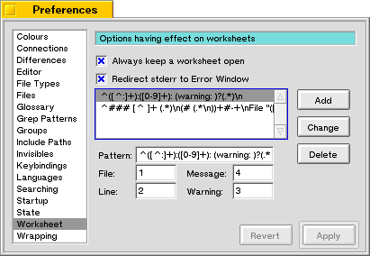
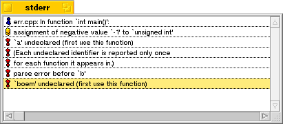

Worksheet
This pane gives you the option to redirect output sent to stderr to a separate window. If this option is not checked, stderr output will be typed in the window just like normal output. Any commandline application can write to the terminal in which it is executed via two channels, stdout and stderr. stdout is used for normal output and stderr is used for error output.
If you choose to redirect stderr and suppose you are compiling a source file containing errors, a window will popup containing a list with all the errors found. Just double click an item in this list and the corresponding source file will be opened and the position causing the error will be selected.

Always keep a Worksheet open, when checked, instructs Pe to open the Worksheet at launch time. Also, when you choose to close all windows, this Worksheet will stay open. If you accidentally close a Worksheet you can quickly reopen it by choosing Worksheet from the Window Menu, or by typing Command-0.
And then comes the difficult part, you can modify the patterns used to parse stderr output. You do this by entering a regular expression that matches an error. An error contains several useful elements and Pe needs to know where to find them in the message. Therefore you have to construct a regular expression that results in several groups, each group containing a different part of the message. Next you enter for the group number for the four elements file, line nr, message description and whether or not this is a warning in the four corresponding edit boxes.
Default Pe recognizes these two classes of error messages:
For the gcc like way of formatting errors:
file.c:1: An error was found on line 1 in file.c
or
file.c:2: warning: A warning was generated for line two in file.c
... and for metrowerks ...
### mwcc Error
# An error was found on line of file file.c
#----------------
File "/boot/home/file.c"; Line 1
#----------------
Last updated: 11/13/98
Copyright 1997,1998, © Hekkelman Programmatuur,
info@hekkelman.com